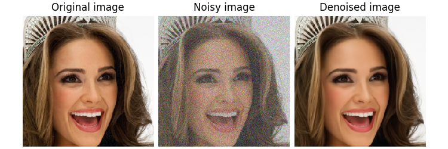
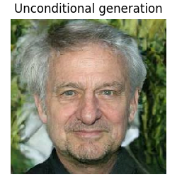
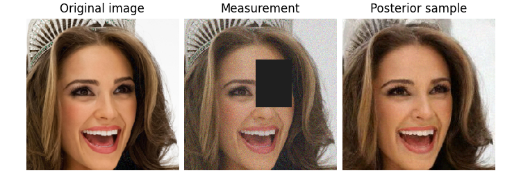

Note
New to DeepInverse? Get started with the basics with the 5 minute quickstart tutorial.
Using state-of-the-art diffusion models from HuggingFace Diffusers with DeepInverse#
This demo shows you how to use our wrapper
deepinv.models.DiffusersDenoiserWrapper to turn any SOTA models from the HuggingFace Hub to an image denoiser. It also can be used to perform unconditional image generation or for posterior sampling.
See more about the diffusers pipeline and our posterior sampling user guide.
Note
This example requires the diffusers and transformers package. You can install it via pip install diffusers transformers.
import torch
import deepinv as dinv
from deepinv.models.wrapper import DiffusersDenoiserWrapper
device = "cuda" if torch.cuda.is_available() else "cpu"
dtype = torch.float32
figsize = 2.5
from deepinv.sampling import (
PosteriorDiffusion,
EulerSolver,
VarianceExplodingDiffusion,
VariancePreservingDiffusion,
)
from deepinv.optim import ZeroFidelity
Let us first load a pretrained diffusion model from the HuggingFace Hub. Here, we use the google/ddpm-ema-celebahq-256 model.
This model is trained on 256x256 of CelebA dataset using the DDPM scheduler.
# We can wrap any diffusers model as a DeepInv denoiser using one line of code:
denoiser = DiffusersDenoiserWrapper(
mode_id="google/ddpm-ema-celebahq-256", device=device
)
# Load an example image
x = dinv.utils.load_example(
"celeba_example2.jpg",
img_size=256,
resize_mode="resize",
).to(device)
# Add noise and test the denoiser
sigma = 0.1
x_noisy = x + sigma * torch.randn_like(x)
with torch.no_grad():
x_denoised = denoiser(x_noisy, sigma=sigma)
dinv.utils.plot(
[x, x_noisy, x_denoised],
figsize=(figsize * 3, figsize),
titles=["Original image", "Noisy image", "Denoised image"],
)

Fetching 4 files: 0%| | 0/4 [00:00<?, ?it/s]
Fetching 4 files: 25%|██▌ | 1/4 [00:00<00:00, 4.89it/s]
Fetching 4 files: 50%|█████ | 2/4 [00:02<00:02, 1.14s/it]
Fetching 4 files: 100%|██████████| 4/4 [00:02<00:00, 1.99it/s]
Loading pipeline components...: 0%| | 0/2 [00:00<?, ?it/s]An error occurred while trying to fetch /home/runner/.cache/huggingface/hub/models--google--ddpm-ema-celebahq-256/snapshots/4cb6117472e6e4f45c5afe606b101858c27c3802: Error no file named diffusion_pytorch_model.safetensors found in directory /home/runner/.cache/huggingface/hub/models--google--ddpm-ema-celebahq-256/snapshots/4cb6117472e6e4f45c5afe606b101858c27c3802.
Defaulting to unsafe serialization. Pass `allow_pickle=False` to raise an error instead.
Loading pipeline components...: 50%|█████ | 1/2 [00:00<00:00, 8.62it/s]
Loading pipeline components...: 100%|██████████| 2/2 [00:00<00:00, 13.04it/s]
It is also possible to use the wrapped model for unconditional image generation. The model was trained with DDPM scheduler, however we can use it with any SDE provided in DeepInv. Here, we use the Variance Exploding SDE with Euler solver for sampling.
num_steps = 125
rng = torch.Generator(device)
timesteps = torch.linspace(1, 0.001, num_steps)
solver = EulerSolver(timesteps=timesteps, rng=rng)
sigma_min = 0.001
sigma_max = 80
sde = VarianceExplodingDiffusion(
sigma_max=sigma_max,
sigma_min=sigma_min,
alpha=0.5,
device=device,
dtype=dtype,
)
model = PosteriorDiffusion(
data_fidelity=ZeroFidelity(),
sde=sde,
denoiser=denoiser,
solver=solver,
dtype=dtype,
device=device,
verbose=True,
)
sample, trajectory = model(
y=None,
physics=None,
x_init=(1, 3, 256, 256),
seed=42,
get_trajectory=True,
)
dinv.utils.plot(
sample,
titles="Unconditional generation",
figsize=(figsize, figsize),
)

0%| | 0/124 [00:00<?, ?it/s]
1%| | 1/124 [00:02<04:17, 2.09s/it]
2%|▏ | 2/124 [00:04<04:14, 2.09s/it]
2%|▏ | 3/124 [00:06<04:11, 2.08s/it]
3%|▎ | 4/124 [00:08<04:09, 2.08s/it]
4%|▍ | 5/124 [00:10<04:07, 2.08s/it]
5%|▍ | 6/124 [00:12<04:06, 2.09s/it]
6%|▌ | 7/124 [00:14<04:05, 2.09s/it]
6%|▋ | 8/124 [00:16<04:02, 2.09s/it]
7%|▋ | 9/124 [00:18<04:00, 2.09s/it]
8%|▊ | 10/124 [00:20<03:58, 2.09s/it]
9%|▉ | 11/124 [00:22<03:56, 2.09s/it]
10%|▉ | 12/124 [00:25<03:56, 2.11s/it]
10%|█ | 13/124 [00:27<03:53, 2.10s/it]
11%|█▏ | 14/124 [00:29<03:51, 2.10s/it]
12%|█▏ | 15/124 [00:31<03:48, 2.10s/it]
13%|█▎ | 16/124 [00:33<03:47, 2.10s/it]
14%|█▎ | 17/124 [00:35<03:45, 2.11s/it]
15%|█▍ | 18/124 [00:37<03:42, 2.10s/it]
15%|█▌ | 19/124 [00:39<03:40, 2.10s/it]
16%|█▌ | 20/124 [00:41<03:38, 2.10s/it]
17%|█▋ | 21/124 [00:44<03:36, 2.10s/it]
18%|█▊ | 22/124 [00:46<03:34, 2.10s/it]
19%|█▊ | 23/124 [00:48<03:32, 2.10s/it]
19%|█▉ | 24/124 [00:50<03:29, 2.10s/it]
20%|██ | 25/124 [00:52<03:27, 2.10s/it]
21%|██ | 26/124 [00:54<03:25, 2.10s/it]
22%|██▏ | 27/124 [00:56<03:23, 2.09s/it]
23%|██▎ | 28/124 [00:58<03:20, 2.09s/it]
23%|██▎ | 29/124 [01:00<03:18, 2.09s/it]
24%|██▍ | 30/124 [01:02<03:17, 2.10s/it]
25%|██▌ | 31/124 [01:04<03:14, 2.10s/it]
26%|██▌ | 32/124 [01:07<03:12, 2.09s/it]
27%|██▋ | 33/124 [01:09<03:09, 2.09s/it]
27%|██▋ | 34/124 [01:11<03:08, 2.09s/it]
28%|██▊ | 35/124 [01:13<03:06, 2.10s/it]
29%|██▉ | 36/124 [01:15<03:04, 2.10s/it]
30%|██▉ | 37/124 [01:17<03:02, 2.10s/it]
31%|███ | 38/124 [01:19<03:00, 2.10s/it]
31%|███▏ | 39/124 [01:21<02:58, 2.10s/it]
32%|███▏ | 40/124 [01:23<02:56, 2.10s/it]
33%|███▎ | 41/124 [01:25<02:53, 2.10s/it]
34%|███▍ | 42/124 [01:28<02:51, 2.10s/it]
35%|███▍ | 43/124 [01:30<02:49, 2.10s/it]
35%|███▌ | 44/124 [01:32<02:47, 2.09s/it]
36%|███▋ | 45/124 [01:34<02:45, 2.09s/it]
37%|███▋ | 46/124 [01:36<02:43, 2.09s/it]
38%|███▊ | 47/124 [01:38<02:41, 2.10s/it]
39%|███▊ | 48/124 [01:40<02:39, 2.10s/it]
40%|███▉ | 49/124 [01:42<02:37, 2.10s/it]
40%|████ | 50/124 [01:44<02:35, 2.10s/it]
41%|████ | 51/124 [01:46<02:33, 2.10s/it]
42%|████▏ | 52/124 [01:48<02:30, 2.09s/it]
43%|████▎ | 53/124 [01:51<02:28, 2.09s/it]
44%|████▎ | 54/124 [01:53<02:26, 2.09s/it]
44%|████▍ | 55/124 [01:55<02:24, 2.09s/it]
45%|████▌ | 56/124 [01:57<02:22, 2.09s/it]
46%|████▌ | 57/124 [01:59<02:20, 2.10s/it]
47%|████▋ | 58/124 [02:01<02:18, 2.10s/it]
48%|████▊ | 59/124 [02:03<02:15, 2.09s/it]
48%|████▊ | 60/124 [02:05<02:13, 2.09s/it]
49%|████▉ | 61/124 [02:07<02:11, 2.08s/it]
50%|█████ | 62/124 [02:09<02:09, 2.08s/it]
51%|█████ | 63/124 [02:11<02:06, 2.08s/it]
52%|█████▏ | 64/124 [02:14<02:05, 2.09s/it]
52%|█████▏ | 65/124 [02:16<02:03, 2.09s/it]
53%|█████▎ | 66/124 [02:18<02:01, 2.09s/it]
54%|█████▍ | 67/124 [02:20<01:59, 2.09s/it]
55%|█████▍ | 68/124 [02:22<01:56, 2.09s/it]
56%|█████▌ | 69/124 [02:24<01:54, 2.09s/it]
56%|█████▋ | 70/124 [02:26<01:52, 2.09s/it]
57%|█████▋ | 71/124 [02:28<01:50, 2.09s/it]
58%|█████▊ | 72/124 [02:30<01:48, 2.08s/it]
59%|█████▉ | 73/124 [02:32<01:46, 2.09s/it]
60%|█████▉ | 74/124 [02:34<01:44, 2.09s/it]
60%|██████ | 75/124 [02:37<01:42, 2.09s/it]
61%|██████▏ | 76/124 [02:39<01:40, 2.09s/it]
62%|██████▏ | 77/124 [02:41<01:38, 2.09s/it]
63%|██████▎ | 78/124 [02:43<01:36, 2.10s/it]
64%|██████▎ | 79/124 [02:45<01:34, 2.10s/it]
65%|██████▍ | 80/124 [02:47<01:32, 2.11s/it]
65%|██████▌ | 81/124 [02:49<01:30, 2.11s/it]
66%|██████▌ | 82/124 [02:51<01:28, 2.11s/it]
67%|██████▋ | 83/124 [02:53<01:26, 2.11s/it]
68%|██████▊ | 84/124 [02:55<01:24, 2.10s/it]
69%|██████▊ | 85/124 [02:58<01:22, 2.10s/it]
69%|██████▉ | 86/124 [03:00<01:19, 2.10s/it]
70%|███████ | 87/124 [03:02<01:17, 2.11s/it]
71%|███████ | 88/124 [03:04<01:15, 2.10s/it]
72%|███████▏ | 89/124 [03:06<01:13, 2.10s/it]
73%|███████▎ | 90/124 [03:08<01:11, 2.09s/it]
73%|███████▎ | 91/124 [03:10<01:08, 2.09s/it]
74%|███████▍ | 92/124 [03:12<01:06, 2.09s/it]
75%|███████▌ | 93/124 [03:14<01:04, 2.09s/it]
76%|███████▌ | 94/124 [03:16<01:02, 2.09s/it]
77%|███████▋ | 95/124 [03:18<01:00, 2.09s/it]
77%|███████▋ | 96/124 [03:21<00:58, 2.09s/it]
78%|███████▊ | 97/124 [03:23<00:56, 2.09s/it]
79%|███████▉ | 98/124 [03:25<00:54, 2.09s/it]
80%|███████▉ | 99/124 [03:27<00:52, 2.09s/it]
81%|████████ | 100/124 [03:29<00:49, 2.08s/it]
81%|████████▏ | 101/124 [03:31<00:47, 2.08s/it]
82%|████████▏ | 102/124 [03:33<00:45, 2.08s/it]
83%|████████▎ | 103/124 [03:35<00:43, 2.08s/it]
84%|████████▍ | 104/124 [03:37<00:41, 2.09s/it]
85%|████████▍ | 105/124 [03:39<00:39, 2.09s/it]
85%|████████▌ | 106/124 [03:41<00:37, 2.09s/it]
86%|████████▋ | 107/124 [03:44<00:35, 2.10s/it]
87%|████████▋ | 108/124 [03:46<00:33, 2.10s/it]
88%|████████▊ | 109/124 [03:48<00:31, 2.10s/it]
89%|████████▊ | 110/124 [03:50<00:29, 2.10s/it]
90%|████████▉ | 111/124 [03:52<00:27, 2.10s/it]
90%|█████████ | 112/124 [03:54<00:25, 2.10s/it]
91%|█████████ | 113/124 [03:56<00:23, 2.10s/it]
92%|█████████▏| 114/124 [03:58<00:20, 2.09s/it]
93%|█████████▎| 115/124 [04:00<00:18, 2.10s/it]
94%|█████████▎| 116/124 [04:02<00:16, 2.10s/it]
94%|█████████▍| 117/124 [04:05<00:14, 2.09s/it]
95%|█████████▌| 118/124 [04:07<00:12, 2.09s/it]
96%|█████████▌| 119/124 [04:09<00:10, 2.09s/it]
97%|█████████▋| 120/124 [04:11<00:08, 2.08s/it]
98%|█████████▊| 121/124 [04:13<00:06, 2.09s/it]
98%|█████████▊| 122/124 [04:15<00:04, 2.09s/it]
99%|█████████▉| 123/124 [04:17<00:02, 2.09s/it]
100%|██████████| 124/124 [04:19<00:00, 2.09s/it]
100%|██████████| 124/124 [04:19<00:00, 2.09s/it]
Similar to other denoisers in DeepInv, the wrapped diffusers model can be used for posterior sampling. Below we use VP-SDE for posterior sampling in an inpainting problem.
# Initialize the physics and the VP-SDE
mask = torch.ones_like(x)
mask[..., 70:150, 120:180] = 0
physics = dinv.physics.Inpainting(
mask=mask,
img_size=x.shape[1:],
device=device,
noise_model=dinv.physics.GaussianNoise(0.05),
)
y = physics(x)
sde = VariancePreservingDiffusion(device=device, dtype=dtype)
posterior_sample = model(
y=y,
physics=physics,
x_init=(1, 3, 256, 256),
seed=15,
)
dinv.utils.plot(
[x, y, posterior_sample],
titles=["Original image", "Measurement", "Posterior sample"],
figsize=(figsize * 3, figsize),
)

0%| | 0/124 [00:00<?, ?it/s]
1%| | 1/124 [00:06<13:29, 6.58s/it]
2%|▏ | 2/124 [00:13<13:20, 6.56s/it]
2%|▏ | 3/124 [00:19<13:14, 6.56s/it]
3%|▎ | 4/124 [00:26<13:09, 6.58s/it]
4%|▍ | 5/124 [00:32<13:01, 6.56s/it]
5%|▍ | 6/124 [00:39<12:55, 6.57s/it]
6%|▌ | 7/124 [00:45<12:47, 6.56s/it]
6%|▋ | 8/124 [00:52<12:38, 6.54s/it]
7%|▋ | 9/124 [00:59<12:33, 6.55s/it]
8%|▊ | 10/124 [01:05<12:27, 6.55s/it]
9%|▉ | 11/124 [01:12<12:19, 6.55s/it]
10%|▉ | 12/124 [01:18<12:13, 6.55s/it]
10%|█ | 13/124 [01:25<12:08, 6.56s/it]
11%|█▏ | 14/124 [01:31<12:01, 6.56s/it]
12%|█▏ | 15/124 [01:38<11:54, 6.55s/it]
13%|█▎ | 16/124 [01:44<11:47, 6.55s/it]
14%|█▎ | 17/124 [01:51<11:41, 6.55s/it]
15%|█▍ | 18/124 [01:58<11:34, 6.56s/it]
15%|█▌ | 19/124 [02:04<11:27, 6.55s/it]
16%|█▌ | 20/124 [02:11<11:20, 6.55s/it]
17%|█▋ | 21/124 [02:17<11:14, 6.55s/it]
18%|█▊ | 22/124 [02:24<11:08, 6.56s/it]
19%|█▊ | 23/124 [02:30<11:02, 6.56s/it]
19%|█▉ | 24/124 [02:37<10:54, 6.55s/it]
20%|██ | 25/124 [02:43<10:48, 6.55s/it]
21%|██ | 26/124 [02:50<10:40, 6.53s/it]
22%|██▏ | 27/124 [02:56<10:34, 6.54s/it]
23%|██▎ | 28/124 [03:03<10:27, 6.54s/it]
23%|██▎ | 29/124 [03:09<10:21, 6.54s/it]
24%|██▍ | 30/124 [03:16<10:14, 6.54s/it]
25%|██▌ | 31/124 [03:23<10:08, 6.54s/it]
26%|██▌ | 32/124 [03:29<10:03, 6.56s/it]
27%|██▋ | 33/124 [03:36<09:55, 6.55s/it]
27%|██▋ | 34/124 [03:42<09:49, 6.55s/it]
28%|██▊ | 35/124 [03:49<09:43, 6.55s/it]
29%|██▉ | 36/124 [03:55<09:36, 6.55s/it]
30%|██▉ | 37/124 [04:02<09:30, 6.56s/it]
31%|███ | 38/124 [04:08<09:23, 6.55s/it]
31%|███▏ | 39/124 [04:15<09:16, 6.55s/it]
32%|███▏ | 40/124 [04:22<09:10, 6.55s/it]
33%|███▎ | 41/124 [04:28<09:04, 6.56s/it]
34%|███▍ | 42/124 [04:35<08:57, 6.56s/it]
35%|███▍ | 43/124 [04:41<08:51, 6.56s/it]
35%|███▌ | 44/124 [04:48<08:44, 6.55s/it]
36%|███▋ | 45/124 [04:54<08:37, 6.54s/it]
37%|███▋ | 46/124 [05:01<08:30, 6.54s/it]
38%|███▊ | 47/124 [05:07<08:24, 6.55s/it]
39%|███▊ | 48/124 [05:14<08:17, 6.55s/it]
40%|███▉ | 49/124 [05:21<08:10, 6.55s/it]
40%|████ | 50/124 [05:27<08:05, 6.56s/it]
41%|████ | 51/124 [05:34<07:58, 6.55s/it]
42%|████▏ | 52/124 [05:40<07:51, 6.55s/it]
43%|████▎ | 53/124 [05:47<07:45, 6.55s/it]
44%|████▎ | 54/124 [05:53<07:38, 6.55s/it]
44%|████▍ | 55/124 [06:00<07:32, 6.55s/it]
45%|████▌ | 56/124 [06:06<07:26, 6.56s/it]
46%|████▌ | 57/124 [06:13<07:19, 6.56s/it]
47%|████▋ | 58/124 [06:20<07:13, 6.57s/it]
48%|████▊ | 59/124 [06:26<07:07, 6.58s/it]
48%|████▊ | 60/124 [06:33<07:00, 6.57s/it]
49%|████▉ | 61/124 [06:39<06:54, 6.58s/it]
50%|█████ | 62/124 [06:46<06:47, 6.58s/it]
51%|█████ | 63/124 [06:52<06:40, 6.57s/it]
52%|█████▏ | 64/124 [06:59<06:33, 6.56s/it]
52%|█████▏ | 65/124 [07:05<06:26, 6.55s/it]
53%|█████▎ | 66/124 [07:12<06:19, 6.54s/it]
54%|█████▍ | 67/124 [07:19<06:12, 6.54s/it]
55%|█████▍ | 68/124 [07:25<06:06, 6.54s/it]
56%|█████▌ | 69/124 [07:32<06:00, 6.55s/it]
56%|█████▋ | 70/124 [07:38<05:53, 6.54s/it]
57%|█████▋ | 71/124 [07:45<05:46, 6.54s/it]
58%|█████▊ | 72/124 [07:51<05:39, 6.53s/it]
59%|█████▉ | 73/124 [07:58<05:33, 6.54s/it]
60%|█████▉ | 74/124 [08:04<05:27, 6.55s/it]
60%|██████ | 75/124 [08:11<05:20, 6.54s/it]
61%|██████▏ | 76/124 [08:17<05:13, 6.53s/it]
62%|██████▏ | 77/124 [08:24<05:07, 6.54s/it]
63%|██████▎ | 78/124 [08:31<05:01, 6.56s/it]
64%|██████▎ | 79/124 [08:37<04:55, 6.56s/it]
65%|██████▍ | 80/124 [08:44<04:48, 6.56s/it]
65%|██████▌ | 81/124 [08:50<04:41, 6.55s/it]
66%|██████▌ | 82/124 [08:57<04:35, 6.56s/it]
67%|██████▋ | 83/124 [09:03<04:29, 6.56s/it]
68%|██████▊ | 84/124 [09:10<04:22, 6.56s/it]
69%|██████▊ | 85/124 [09:16<04:15, 6.56s/it]
69%|██████▉ | 86/124 [09:23<04:09, 6.56s/it]
70%|███████ | 87/124 [09:30<04:02, 6.55s/it]
71%|███████ | 88/124 [09:36<03:55, 6.55s/it]
72%|███████▏ | 89/124 [09:43<03:49, 6.55s/it]
73%|███████▎ | 90/124 [09:49<03:42, 6.54s/it]
73%|███████▎ | 91/124 [09:56<03:36, 6.55s/it]
74%|███████▍ | 92/124 [10:02<03:29, 6.55s/it]
75%|███████▌ | 93/124 [10:09<03:23, 6.56s/it]
76%|███████▌ | 94/124 [10:15<03:16, 6.55s/it]
77%|███████▋ | 95/124 [10:22<03:10, 6.56s/it]
77%|███████▋ | 96/124 [10:29<03:03, 6.57s/it]
78%|███████▊ | 97/124 [10:35<02:57, 6.56s/it]
79%|███████▉ | 98/124 [10:42<02:51, 6.58s/it]
80%|███████▉ | 99/124 [10:48<02:44, 6.57s/it]
81%|████████ | 100/124 [10:55<02:37, 6.57s/it]
81%|████████▏ | 101/124 [11:01<02:31, 6.57s/it]
82%|████████▏ | 102/124 [11:08<02:24, 6.56s/it]
83%|████████▎ | 103/124 [11:15<02:18, 6.57s/it]
84%|████████▍ | 104/124 [11:21<02:11, 6.58s/it]
85%|████████▍ | 105/124 [11:28<02:05, 6.58s/it]
85%|████████▌ | 106/124 [11:34<01:58, 6.58s/it]
86%|████████▋ | 107/124 [11:41<01:51, 6.59s/it]
87%|████████▋ | 108/124 [11:47<01:45, 6.58s/it]
88%|████████▊ | 109/124 [11:54<01:38, 6.58s/it]
89%|████████▊ | 110/124 [12:01<01:32, 6.58s/it]
90%|████████▉ | 111/124 [12:07<01:25, 6.57s/it]
90%|█████████ | 112/124 [12:14<01:18, 6.56s/it]
91%|█████████ | 113/124 [12:20<01:12, 6.55s/it]
92%|█████████▏| 114/124 [12:27<01:05, 6.56s/it]
93%|█████████▎| 115/124 [12:33<00:59, 6.56s/it]
94%|█████████▎| 116/124 [12:40<00:52, 6.57s/it]
94%|█████████▍| 117/124 [12:46<00:45, 6.55s/it]
95%|█████████▌| 118/124 [12:53<00:39, 6.54s/it]
96%|█████████▌| 119/124 [13:00<00:32, 6.54s/it]
97%|█████████▋| 120/124 [13:06<00:26, 6.54s/it]
98%|█████████▊| 121/124 [13:13<00:19, 6.54s/it]
98%|█████████▊| 122/124 [13:19<00:13, 6.55s/it]
99%|█████████▉| 123/124 [13:26<00:06, 6.56s/it]
100%|██████████| 124/124 [13:32<00:00, 6.55s/it]
100%|██████████| 124/124 [13:32<00:00, 6.55s/it]
Total running time of the script: (18 minutes 3.248 seconds)